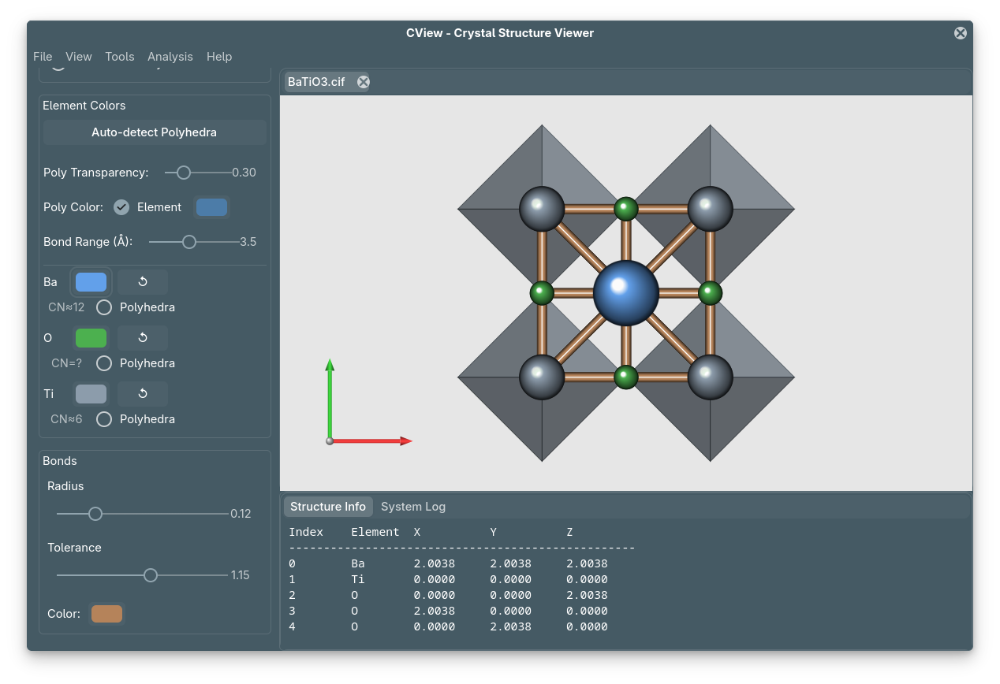

Cover
CView: Crystal Structure Visualization & Analysis


CView is a high-performance crystallographic tool written in Rust and GTK4. It bridges the gap between structure visualization and ab-initio calculation setup (VASP, QE, SPRKKR).
Important
This version of
CViewis built on GTK4, which primarily utilizes the CPU for rendering.
While the engine is optimized, it is designed for crystal structures (unit cells, supercells, slabs). It handles systems up to $\approx 5000$ atoms with ease, but it is not suitable for visualizing massive biological macromolecules (e.g., proteins, DNA) containing millions of atoms.
The largest molecule we have tested is of $6000$ atoms core shell polymer.
Tip
CView is not just a viewer; it is a pre-calculation validator. It focuses on Reciprocal Space and Geometric consistency to prevent wasted CPU hours on incorrect VASP/QE inputs.

Why CView?
| Feature | Description |
|---|---|
| Fast & Lightweight | Built on Rust/GTK4. No GPU drivers required. Runs on any laptop. |
| Analysis First | Dedicated tools for K-Paths, Slabs, and Void Analysis. |
| DFT Ready | Native support for VASP, Quantum Espresso, and SPRKKR formats. |
| Publication Quality | Export high-resolution, transparent PNGs and PDFs using PBR rendering. |
Documentation Overview
This manual is divided into three parts:
- Installation: Get CView running on Linux, Windows, or macOS.
- User Guide: Deep dive into the scientific methodology.
- K-Path Visualization: Brillouin zone construction and HSP selection.
- XRD Simulation: Structure factors and powder diffraction patterns.
- Surface Slabs: Creating vacuum-padded slabs for surface science.
- Charge Density: Charge Density analysis
- Tutorials: To Do.
Quick Start
Get up and running in seconds.
Clone and Run
git clone https://github.com/mavensgroup/cview.git
cd cview
cargo run --release
See the Installation Page for detailed OS-specific instructions.
Supported Formats
| Format | VASP | Quantum Espresso | SPRKKR | CIF / XYZ |
|---|---|---|---|---|
| Read | 🟢 | 🟢 | 🟢 | 🟢 |
| Write | 🟢 | 🟠 | 🟠 | 🟢 |
Links
Warning
This is a beta release. While the core functionality is operational, the software may contain incomplete features, bugs, or unstable behaviour.
Contributions from testers and developers are welcome.
License & Citation
CView is open-source software licensed under the MIT Licence.
If you use CView in your research, please cite the repository.
Installation
Tip
If you have
cargoinstalled, then jump to Build from source.
CView is a cross-platform application built on Rust and GTK4. Because it uses the native GTK4 libraries for rendering, the installation process involves two steps:
- Installing the system dependencies (GTK4).
- Compiling the application using Cargo.
1. Install Dependencies
Select your operating system below to set up the required libraries.
Linux
You need the GTK4 development headers and the standard build tools (gcc/clang).
Fedora / RHEL
sudo dnf install gcc gtk4-devel libadwaita-devel
Ubuntu / Debian / Mint
sudo apt update
sudo apt install build-essential libgtk-4-dev libadwaita-1-dev
Arch Linux / Manjaro
sudo pacman -S base-devel gtk4 libadwaita
macOS
The easiest way to install GTK4 on macOS is via Homebrew.
# 1. Install Homebrew if you haven't already
/bin/bash -c "$(curl -fsSL [https://raw.githubusercontent.com/Homebrew/install/HEAD/install.sh](https://raw.githubusercontent.com/Homebrew/install/HEAD/install.sh))"
# 2. Install Rust and GTK4
brew install rust gtk4 libadwaita adwaita-icon-theme
Windows
For Windows, we recommend using the MSYS2 environment to manage the native GTK4 libraries.
- Install MSYS2: Download the installer from msys2.org.
- Open the Terminal: Launch
MSYS2 MinGW 64-bit. - Install Toolchain:
Run this command inside the MSYS2 terminal:
pacman -S mingw-w64-x86_64-gtk4 mingw-w64-x86_64-rust mingw-w64-x86_64-gcc - Add to Path: Add
C:\msys64\mingw64\binto your Windows System PATH environment variable.- Why? This allows you to run
cargo runfrom VS Code or PowerShell later.
- Why? This allows you to run
Important
The
pacmancommand above works only inside the MSYS2 terminal. It will fail if you try to run it in PowerShell or Command Prompt.
2. Install Rust
If you do not have the Rust compiler installed, the recommended way is via rustup.
Note
CView requires Rust 1.70 or higher. Check your version with:
cargo --version
Command (Linux / macOS / Windows PowerShell):
curl --proto '=https' --tlsv1.2 -sSf [https://sh.rustup.rs](https://sh.rustup.rs) | sh
3. Build from Source
Once the dependencies are ready, you can compile CView directly from the repository.
# 1. Clone the repository
git clone [https://github.com/mavensgroup/cview.git](https://github.com/mavensgroup/cview.git)
cd cview
# 2. Build and Run (Release mode recommended for performance)
cargo run --release
The first compilation may take a few minutes as it compiles the dependencies. Subsequent runs will be instant.
Note
To install
cviewas a system command (accessible from anywhere), use:cargo install --path .This places the binary in
~/.cargo/bin/(ensure this is in your PATH).
Troubleshooting
Caution
If the build fails claiming it cannot find
gtk4orpkg-config, it means the development headers are missing.
- Linux: Ensure you installed the
-devor-develpackages (e.g.,libgtk-4-dev), not just the runtime library.- macOS: Try running
brew link gtk4.
Caution
If you see errors related to
ccorld:
- Ensure you have
build-essential(Linux) or Xcode Command Line Tools (macOS) installed.
Loading & Visualization
This section outlines the core workflows for importing structure files, managing the workspace, and controlling the visual representation of crystal structures.
File Operations
Opening Files
To load a structure, navigate to File → Open (Ctrl + O) in the application menu. CView utilizes the native file chooser of your operating system to ensure a familiar experience.
Supported Formats: CView automatically detects the file type based on extension and content. You can open the following formats:
| Format | Extensions | Description |
|---|---|---|
| CIF | .cif | Standard Crystallographic Information Files. |
| VASP | POSCAR, CONTCAR, .vasp | Standard VASP structure inputs and outputs. |
| Quantum Espresso | .in, .out, .pwi, .qe | Reads atomic positions and cell parameters from input/output logs. |
| SPR-KKR | .pot, .sys | Munich SPR-KKR potential and system files. |
| XYZ | .xyz | Cartesian coordinates (Standard and Extended XYZ). |
Tab Management
CView uses a tabbed interface to handle multiple structures simultaneously. The application employs a smart loading strategy to keep the workspace clean:
- Replacement Mode: If the current active tab is empty (labelled “Untitled” with no structure), opening a file will replace this tab.
- New Tab Mode: If a structure is already loaded, the new file will open in a separate, closable tab.
Note
Upon successfully loading a file, the application logs the event in the Interaction Log and automatically refreshes the Sidebar to display the atom list for the new structure.
Saving & Exporting
Saving Data
To convert a loaded structure into a different format, use File → Save As (Shift+ Ctrl+ S). The output format is determined by the selected file filter in the dialog.
Available Output Formats:
- CIF (*.cif)
- VASP POSCAR (POSCAR, *.vasp)
- SPR-KKR Potential (*.pot)
- Quantum Espresso Input (*.in)
- XYZ (*.xyz)
Visualization Controls
Once a structure is loaded, the View menu provides tools to orient and inspect the crystal lattice.
Standard Views
Quickly align the camera to specific crystallographic axes to inspect symmetry or stacking sequences.
- View Along A: Aligns camera with the a-axis (y=−90°).
- View Along B: Aligns camera with the b-axis (x=90°).
- View Along C: Aligns camera with the c-axis (Standard Plan View).
- Reset View: Restores the default zoom (1.0) and rotation (0,0).
Rotation Modes
You can customize the pivot point around which the camera rotates, depending on whether you are inspecting the atomic cluster or the lattice boundaries.
| Mode | Description |
|---|---|
| Centroid | Rotates around the geometric centre of the atoms. Best for inspecting molecules or specific bonding environments. |
| Unit Cell | Rotates around the centre of the unit cell box. Best for understanding the lattice boundaries relative to the origin. |
Exporting Visuals
For publications and presentations, CView offers high-fidelity export options via the File → Export (Ctrl + E) menu.
PNG Image: Renders a high-resolution raster image (default resolution: $2000\times 1500$ pixels). Ideal for slides and quick sharing.
PDF Document: Exports the scene as a vector graphic. This is recommended for academic papers, as it allows for infinite scaling without loss of quality.
Advanced Appearance Controls
Sidebar Overview
The Sidebar (right panel) is the primary control interface for customizing the visual representation. It contains several collapsible sections:
- View Controls: Camera orientation, rotation center
- Appearance: Atom size, bond thickness, colors
- Bond Valence: BVS-based coloring (see BVS Guide)
- Atom List: Per-element visibility and transparency
Color Modes
CView offers three distinct coloring schemes, accessible via the Color Mode dropdown in the sidebar:
| Mode | Description | Use Case |
|---|---|---|
| Element | Standard CPK colors (C=gray, O=red, etc.) | General visualization, publication figures |
| Bond Valence | Heatmap based on oxidation state deviation | Identifying strained bonds, charge transfer |
| Uniform | Single color for all atoms | Minimalist renders, presentations |
Bond Valence Mode: Colors atoms by their BVS deviation:
- Blue: Under-coordinated (BVS < expected valence)
- White: Ideal coordination (BVS ≈ expected valence)
- Red: Over-coordinated (BVS > expected valence)
See the Bond Valence Sum Guide for details on the calculation.
Transparency Controls
Each element in the structure has an individual transparency slider in the Atom List section:
- Use case: Highlight specific atomic species by making others semi-transparent
- Example: In a LiCoO₂ battery cathode, make Li transparent to see the CoO₂ layers clearly
Tip: Combine transparency with polyhedra (see below) to visualize coordination environments.
Bond Customization
The Bonds section in the sidebar controls:
- Bond Radius: Thickness of bond cylinders (default: 0.1 Å)
- Bond Cutoff: Maximum distance for drawing bonds (default: 2.5× covalent radius sum)
- Bond Color: RGB picker for custom bond colors
Bonds are drawn between atoms whose distance $d$ satisfies: $$ d \leq \text{cutoff} \times (r_{\text{cov},A} + r_{\text{cov},B}) $$ where $r_{\text{cov}}$ are the covalent radii from the internal database.
Coordination Polyhedra
CView can visualize coordination polyhedra around cation centers — a feature essential for understanding ionic and metal-oxide structures.
What are Coordination Polyhedra?
A coordination polyhedron is the 3D shape formed by connecting the nearest-neighbor anions around a central cation. Common geometries include:
- Tetrahedral (CN = 4): SiO₄ in silicates
- Octahedral (CN = 6): TiO₆ in perovskites
- Cubic (CN = 8): CsCl structure
Accessing Polyhedra Controls
Location: Sidebar → Appearance section → Polyhedra expander
Controls:
- Auto-Detect button: Automatically enables polyhedra for elements with average coordination number 4–8
- Per-element checkboxes: Manually enable/disable polyhedra for specific elements
- Checkbox labels show the average CN (e.g., “Ti (CN 6)”)
- Transparency slider: Adjust polyhedra opacity (0–100%)
How Polyhedra are Computed
Algorithm (implemented in rendering/polyhedra.rs):
- Identify cation centers (user-selected or auto-detected)
- Find nearest anion neighbors within the bond cutoff distance
- Compute the convex hull of the anion positions
- Filter degenerate faces (coplanar vertices)
- Render with proper depth sorting (Polyhedra → Bonds → Atoms)
Critical detail: Polyhedra vertices are restricted to anions only. This prevents chemically meaningless polyhedra (e.g., around O in oxides).
Note
The two-tier ghost system ensures polyhedra are correctly computed across periodic boundaries — ghost atoms used for coordination detection are different from those rendered visually.
Settings
Coordination Number Filter (in Preferences):
- Min CN: Minimum coordination to display (default: 4)
- Max CN: Maximum coordination to display (default: 12)
- Filters out isolated atoms or highly over-coordinated sites
Color Mode:
- Element: Polyhedra inherit the color of the central cation
- Coordination: Color-coded by CN (e.g., CN=4 → yellow, CN=6 → blue)
Max Bond Distance: Hard cutoff in Ångströms for coordination bonds (overrides covalent radius heuristic)
Practical Example: BaTiO₃
In the cubic perovskite BaTiO₃:
- Ti⁴⁺ is octahedrally coordinated by 6 oxygen atoms → TiO₆ octahedra
- Ba²⁺ has 12-fold coordination → Cuboctahedral (can be hidden if noisy)
Workflow:
- Load BaTiO₃ structure
- Click “Auto-Detect” in the sidebar
- Ti polyhedra appear as blue octahedra
- Adjust transparency to see through to the unit cell
This visualization immediately reveals the corner-sharing connectivity characteristic of perovskites.
Keyboard Shortcuts
| Shortcut | Action |
|---|---|
Ctrl + O | Open file |
Ctrl + S | Save structure |
Shift + Ctrl + S | Save structure as… |
Ctrl + E | Export image (PNG/PDF) |
Ctrl + T | Toggle Primitive ↔ Conventional cell |
| Mouse scroll | Zoom in/out |
| Left-click drag | Rotate structure |
| Shift + click | Multi-select atoms |
Performance Notes
CView is optimized for CPU-based rendering using GTK4/Cairo:
- Smooth interaction up to ~5000 atoms
- Real-time rotation and zoom
- No GPU drivers required (runs on any laptop)
For larger systems (e.g., nanoparticles, proteins), consider specialized GPU-accelerated tools like OVITO.
Analysis Tools
The Analysis module in CView aggregates tools designed to characterize the geometric, symmetric, and diffraction properties of the loaded crystal structure. Unlike simple visualization, these tools perform computational tasks to extract physical descriptors suitable for comparison with experimental data or preparation for ab initio calculations.
Accessing Analysis Tools
The analysis suite is accessible via the Analysis menu in the main application window. This triggers the centralized Analysis Window (actions_analysis.rs), which provides tabbed access to the following modules:
- Symmetry: Space group determination and symmetry operation analysis.
- XRD: X-Ray Diffraction pattern simulation.
- Voids: Porosity and intercalation site analysis.
- K-Path: Reciprocal space path generation for band structures.
Documentation Modules
Detailed physical derivation and algorithmic implementation for each tool are provided below:
- Symmetry Analysis
- Engine: Moyo (Rust implementation of Spglib).
- Output: Space Group symbols, numbers, and crystal systems.
- XRD Simulation
- Theory: Kinematic Diffraction Theory.
- Features: Powder patterns, Cu-K$\alpha$ radiation, Lorentz-Polarization corrections.
- Void & Intercalation
- Method: Grid-based geometric insertion.
- Application: Porosity calculation and battery ion insertion sites.
- Reciprocal Space (K-Path)
- Method: High-symmetry path standardization (Setyawan-Curtarolo).
- Application: Band structure calculation inputs.
- Surface Slabs
- Method: Lattice transformation via planar basis searching.
Symmetry Analysis
The Symmetry module identifies the underlying crystallographic space group of the loaded structure. It is essential for reducing computational cost in DFT calculations and validating experimental structures.
Algorithmic Implementation
CView utilizes the Moyo library (a Rust ecosystem equivalent to Spglib) to perform symmetry determination. The analysis pipeline proceeds as follows:
- Lattice Standardization: The internal
Structure(Cartesian coordinates) is converted into aMoyo::Cell, utilizing the lattice vectors as columns of a $3\times3$ matrix. - Coordinate Transformation: Atomic positions are transformed from Cartesian ($r_{cart}$) to Fractional ($r_{frac}$) coordinates via the inverse lattice matrix: $$r_{frac} = M_{lattice}^{-1} \cdot r_{cart}$$
- Symmetry Search: The algorithm searches for symmetry operations (rotations $R$ and translations $t$) that map the crystal onto itself: $$R \cdot r + t \equiv r’ \pmod 1$$ where $r$ and $r’$ are atomic positions of the same species.
Tolerance (SYMPREC)
The code applies a default symmetry precision (SYMPREC) of 1e-3 Å. This tolerance accommodates minor numerical noise common in file formats like .cif or .xyz, ensuring that slightly distorted experimental structures are correctly identified.
Outputs
The module returns a SymmetryInfo struct containing:
- Space Group Number: The International Tables for Crystallography (ITA) number (1–230).
- International Symbol: The Hermann-Mauguin notation (e.g., $Pm\overline{3}m$, $Fm\overline{3}m$).
- Crystal System: The classification (Triclinic, Monoclinic, Orthorhombic, Tetragonal, Trigonal, Hexagonal, or Cubic).
Usage Reference
This analysis is performed “read-only” regarding the structure; it calculates descriptors without altering the atomic coordinates of the active tab.
XRD Simulation
The X-Ray Diffraction (XRD) module simulates the powder diffraction pattern for the loaded structure. It utilizes Kinematic Diffraction Theory, assuming ideal interactions without primary extinction or multiple scattering events.
Physical Model
1. Lattice Physics
The simulation first calculates the Reciprocal Lattice vectors ($b_1, b_2, b_3$) from the real space lattice ($a_1, a_2, a_3$): $$b_1 = 2\pi \frac{a_2 \times a_3}{a_1 \cdot (a_2 \times a_3)}$$ (and cyclic permutations for $b_2, b_3$).
2. Bragg Condition
The code iterates through integer Miller indices $(h, k, l)$ to find reciprocal lattice vectors $G_{hkl} = h b_1 + k b_2 + l b_3$. The d-spacing is calculated as: $$d_{hkl} = \frac{2\pi}{|G_{hkl}|}$$ Diffraction peaks are identified where the Bragg condition is met for the source wavelength ($\lambda = 1.5406 Å$, Cu K$\alpha$): $$\lambda = 2d \sin\theta$$
3. Structure Factor ($F_{hkl}$)
The intensity of each reflection is governed by the Structure Factor, calculated by summing over all $N$ atoms in the unit cell: $$F_{hkl} = \sum_{j=1}^{N} f_j(\theta) \exp\left[2\pi i (hx_j + ky_j + lz_j)\right]$$
- $x_j, y_j, z_j$: Fractional coordinates of atom $j$.
- $f_j(\theta)$: The atomic scattering factor.
Note
The atomic scattering factor ($f_j(\theta)$) has been calculated using Cromer-Mann coefficient (
model/elements.rs)
4. Intensity Correction
The raw squared structure factor $|F_{hkl}|^2$ is corrected to obtain the observed intensity $I$. The primary correction applied in xrd.rs is the Lorentz-Polarization (LP) Factor for unpolarized radiation (standard laboratory diffractometer):
$$ \begin{align} LP(\theta) &= \frac{1 + \cos^2(2\theta)}{\sin^2\theta \cos\theta}\\ I_{calc} &= |F_{hkl}|^2 \times LP(\theta) \end{align}$$
5. Multiplicity and Merging
In powder diffraction, symmetry-equivalent planes (e.g., $(100)$ and $(010)$ in cubic systems) diffract at the same angle. The code algorithmically sorts peaks by $2\theta$ and merges peaks falling within a narrow tolerance ($0.05^\circ$), summing their intensities to account for multiplicity.
6. Match with Experiment
You can load the experimental ascii/xlsx file to compare the xrd using the “Load Experiment” button.
Settings
- Wavelength: Default fixed to Cu K$\alpha$ ($1.5406 Å$).
- Range: $10^\circ$ to $90^\circ$ $2\theta$.
- Filtering: Peaks with intensity $\leq 10^{-4}$ relative to the maximum are discarded to reduce noise.
High symmetry k-points and k-path
Electronic structure calculations (Band Structures) requires sampling the energy eigenvalues along specific high-symmetry lines in the first Brillouin Zone. This module automates the generation of these paths.
Implementation
1. Brillouin Zone Standardization
The code relies on the Moyo library to first determine the Bravais lattice type (e.g., FCC, BCC, HEX). This step is crucial because the definition of “High Symmetry Points” depends entirely on the lattice symmetry.
2. High Symmetry Points
CView implements standard K-point definitions (typically following the Setyawan-Curtarolo convention).
- Input: Real space structure.
- Transformation: Converted to Primitive Reciprocal space.
- Mapping: Standard points (e.g., $\Gamma = [0,0,0]$, $X = [0, 0.5, 0]$) are generated based on the detected space group.
3. Path Generation
The module generates two data sets:
- Linear Path: A sequence of k-points (e.g., $\Gamma \rightarrow X \rightarrow W \rightarrow K \rightarrow \Gamma$) for band structure plotting.
- Wireframe: A list of Cartesian line segments representing the edges of the first Brillouin Zone, used for 3D visualization in the UI.
Coordinate Systems
The internal logic handles the matrix multiplication to convert between:
- Fractional Reciprocal Coordinates: Used for DFT inputs (e.g., KPOINTS file).
- Cartesian Reciprocal Coordinates: Used for the 3D wireframe visualization in CView.
Voids Analysis
This module performs geometric analysis to identify empty space within the crystal lattice. It is critical for research into battery materials (ion intercalation), porous frameworks (MOFs/Zeolites), and defect analysis.
Algorithm: Grid-Based Geometric Insertion
The analysis does not rely on Voronoi decomposition but rather a robust Grid Probe Method.
1. Grid Generation
A Cartesian grid is superimposed over the unit cell. The resolution is determined dynamically or fixed (standard grid spacing is generally $\leq 0.2 \text{\AA}$ for high precision). $$P_{grid} = u \cdot a + v \cdot b + w \cdot c \quad \text{where } u,v,w \in [0, 1]$$
2. Distance Field Calculation
For every point on the grid, the algorithm calculates the Euclidean distance to the nearest atomic surface. This accounts for Periodic Boundary Conditions (PBC) by checking nearest neighbor images. $$D_{surf} = \min_{atoms} (||P_{grid} - P_{atom}|| - R_{vdw})$$ Where $R_{vdw}$ is the Van der Waals radius of the atom.
3. Probe Insertion
A geometric probe (representing a gas molecule or ion) with radius $R_{probe}$ is tested at each grid point. A point is considered a “Void” if: $$D_{surf} > R_{probe}$$
4. Clustering (Largest Sphere)
To find discrete void centers (e.g., for max_sphere_center), the algorithm aggregates contiguous void points. The implementation explicitly identifies the point with the maximum clearance radius to locate the largest cavity center.
Presets and Data
The module includes standard probe definitions for common applications:
- Gases: He ($1.20 Å$), N$_2$ ($1.82 Å$), CO$_2$ ($1.65 Å$).
- Ions: Li$^+$ ($0.76 Å$), Na$^+$ ($1.02 Å$), Mg$^{2+}$ ($0.72 Å$).
The void fraction is calculated as: $$\phi = \frac{N_{void}}{N_{total}} \times 100%$$
Miller Planes
Miller indices $(hkl)$ are a standard notation for describing crystallographic planes. CView allows you to visualize these planes directly in the viewport and use them as input for slab generation.
Miller Index Notation
A Miller plane $(hkl)$ is defined by its intercepts with the lattice vectors $\mathbf{a}$, $\mathbf{b}$, $\mathbf{c}$:
- The plane intersects the a-axis at $\mathbf{a}/h$
- The plane intersects the b-axis at $\mathbf{b}/k$
- The plane intersects the c-axis at $\mathbf{c}/l$
Special cases:
- $h = 0$: Plane is parallel to the a-axis (intersects at infinity)
- Negative indices: Written with a bar, e.g., $(1\bar{1}0)$ for $h=1, k=-1, l=0$
Common Low-Index Planes
| Plane | Description | Example (Cubic) |
|---|---|---|
| $(100)$ | Perpendicular to a-axis | Cube face |
| $(110)$ | Diagonal through two axes | Edge-sharing |
| $(111)$ | Diagonal through all three axes | Close-packed |
In cubic systems, $(100)$, $(010)$, and $(001)$ are equivalent by symmetry. In lower-symmetry systems (e.g., orthorhombic, hexagonal), they are distinct.
Visualizing Miller Planes
Access: Tools → Miller Planes
How to Use
- Open the Miller Planes dialog
- Enter the desired indices $(h, k, l)$
- Example:
1,1,1for the $(111)$ plane
- Example:
- Click “Show Plane”
What you see:
- A semi-transparent plane rendered in the viewport
- The plane intersects the unit cell edges
- If the structure is periodic, the plane extends across multiple cells
Tip
The plane geometry is computed using the Diophantine algorithm implemented in
physics/operations/miller_algo.rs. This ensures the plane is positioned exactly at integer linear combinations of lattice vectors.
Plane Shape
The visible plane is a polygon formed by the intersection of the $(hkl)$ plane with the unit cell boundaries.
Example: In a cubic unit cell:
- $(100)$ plane → Square (intersects 4 edges)
- $(110)$ plane → Rectangle
- $(111)$ plane → Triangle (intersects 3 edges)
The shape reflects the actual crystallographic geometry, not just a generic overlay.
Algorithmic Details
Finding the Plane Basis
CView solves for two in-plane vectors $\mathbf{u}$, $\mathbf{v}$ that:
- Lie entirely within the $(hkl)$ plane
- Are expressed as integer combinations of $\mathbf{a}$, $\mathbf{b}$, $\mathbf{c}$
- Have minimal length (primitive surface cell)
Implementation: find_plane_basis() in miller_algo.rs
This is the same algorithm used internally for slab generation — when you create a slab along $(hkl)$, these vectors become the new in-plane lattice vectors.
Plane Position
By default, the plane passes through the origin. For slab generation, you can specify:
- Number of atomic layers to include
- Vacuum thickness above and below
Connection to Slab Generation
Miller planes are the primary input for creating surface structures:
- Select a plane: Use the Miller Planes tool to visualize candidates
- Generate slab:
Analysis → Slab(uses the same $(hkl)$ indices) - Add vacuum: Specified in Ångströms
- Repeat layers: Control slab thickness
See the Slab Generation Guide for details.
Practical Examples
Example 1: TiO₂ Rutile (110) Surface
The $(110)$ plane of rutile TiO₂ is the most stable surface.
Workflow:
- Load rutile TiO₂ structure
- Open
Tools → Miller Planes - Enter
1,1,0 - Observe the plane cutting through rows of oxygen atoms
This helps you understand which atoms will be exposed in a slab calculation.
Example 2: Graphene (0001) Plane
For hexagonal structures like graphite, the $(0001)$ plane (also called the “c-plane”) is perpendicular to the stacking direction.
Indices: 0, 0, 0, 1 (four-index notation for hexagonal)
Note
CView uses the three-index $(hkl)$ convention. For hexagonal systems, convert from Miller-Bravais $(hkil)$ by dropping the third index.
Keyboard Shortcuts
- Show Plane: No dedicated shortcut — use
Tools → Miller Planes - Clear Plane: Closing the dialog removes the overlay
Related Features
- Slab Generation: Create vacuum-separated surfaces along $(hkl)$
- Charge Density: Slice CHGCAR along Miller planes
- Symmetry: Identify symmetry-equivalent planes
Bond Valence Sum (BVS)
The Bond Valence Sum (BVS) module is an empirical analytical tool used to estimate the oxidation states of atoms in a crystal structure and evaluate the physical plausibility of their coordination environments.
Physical Model
The core principle of BVS is that the valence of an atom ($V_i$) is equal to the sum of the individual bond valences ($s_{ij}$) from all its surrounding nearest neighbors: $$BVS_i = \sum_{j} s_{ij}$$
The individual bond valences are calculated using the standard exponential relationship: $$s_{ij} = \exp\left(\frac{R_0 - R_{ij}}{B}\right)$$ Where:
- $R_{ij}$: The actual measured distance between atom $i$ and atom $j$.
- $R_0$: The tabulated ideal bond length for the specific atom pair and oxidation state.
- $B$: An empirical constant, typically $0.37 \text{\AA}$.
Parameter Database
CView does not require you to input $R_0$ parameters manually. The internal engine strictly implements:
- Primary Database: The modern IUCr 2020 (
bvparm2020.cif) table containing over 1000 oxidation-state-specific element pairs. - Fallback Database: The empirical Brese & O’Keeffe (1991) parameters for untabulated pairs.
Algorithmic Implementation
Full Periodic Image Search
Unlike basic implementations that use a simple minimum-image convention (which can fail for high-coordination sites like Barium in perovskites where $CN=12$), CView loops over all periodic images within a defined spherical cutoff. This ensures mathematically rigorous summation for complex and tightly packed lattices.
Automatic Valence Matching
Valences are not hardcoded. The algorithm iteratively tests a sequence of plausible valences from the IUCr table (prioritizing the most specific matches first, followed by average sentinel values) to find the best fit for your structure.
Using BVS in CView
Accessing BVS Values
Location: Sidebar → Bond Valence expander
When you expand this section, CView automatically:
- Computes BVS for all atoms using the current bond cutoff
- Assigns oxidation states based on best-fit valences
- Displays the results in a scrollable list
Output format (per atom):
Fe(1): BVS = 2.93 [expected: 3+]
O(2): BVS = -1.98 [expected: 2-]
BVS Color Mode
How to enable: Sidebar → Appearance → Color Mode dropdown → Select Bond Valence
Effect: Atoms are colored by their BVS deviation:
- Blue: Under-coordinated (BVS < formal valence) — vacancies nearby, surface atoms
- White: Ideal coordination (BVS ≈ formal valence)
- Red: Over-coordinated (BVS > formal valence) — interstitials, compressed regions
This heatmap is particularly useful for:
- Identifying structurally strained sites in defective crystals
- Validating relaxed DFT geometries (all sites should be near-white)
- Spotting charge transfer in interfaces or heterostructures
Tip
Combine BVS coloring with polyhedra visualization to simultaneously see coordination geometry and electronic state.
Charge Density Visualization
The Charge Density module allows for the visual analysis of 3D volumetric data generated by ab-initio codes, specifically targeting VASP CHGCAR formats. This tool bridges the gap between raw electronic structure outputs and qualitative chemical bonding analysis.
Core Features
2D Slice Extraction
Rather than volume rendering, CView employs a high-precision 2D slice extraction technique coupled with a marching squares algorithm for isoline generation.
Slices can be defined in two ways:
- Crystallographic Planes: Fast slicing perpendicular to the primary lattice vectors (XY, XZ, YZ planes) at a specific fractional coordinate.
- Miller Planes: General slicing along any $(hkl)$ index. The internal engine interpolates the 3D grid data onto the specified arbitrary plane.
Density Channels
For spin-polarized calculations, CView supports extracting specific electronic components:
- Total Density: Standard $\rho_{up} + \rho_{down}$.
- Spin-Up / Spin-Down: Isolated individual spin channels.
- Magnetization: The difference $\rho_{up} - \rho_{down}$. This channel automatically applies a diverging colormap to clearly delineate positive and negative magnetic moments.
Difference Density Maps
A powerful feature of the module is the Difference Mode. You can load two distinct CHGCAR files (e.g., a combined system and an isolated adatom) to compute and visualize charge transfer.
The software calculates $\Delta\rho(r) = \rho_A(r) - \rho_B(r)$ on the fly, allowing you to visually identify regions of electron accumulation and depletion.
Tip
CView utilizes Cairo for high-fidelity 2D rendering. When a slice is drawn, atoms near the slice plane are geometrically projected onto the 2D canvas, using standard CPK colors for easy chemical identification.
Exporting
Slices can be instantly exported as high-resolution png or pdf images directly from the visualization tab, complete with isolines, heatmaps, and atomic projections.
Export Configuration: Settings (font sizes, colorbar tick labels, line thickness) are read live from the Preferences dialog at the moment you click export — not when the window opens. This ensures your exports always match your current preferences.
Advanced Features
Picture-in-Picture 3D Preview
When viewing a 2D slice, CView displays a 3D miniature of the full crystal structure in the corner of the canvas. This preview shows:
- The complete unit cell with atoms rendered
- The orientation of the current slice plane highlighted
- Real-time updates as you change the slice position or Miller indices
Purpose: Helps maintain spatial context when inspecting arbitrary $(hkl)$ planes — you always know where the slice is cutting through the structure.
Location: Top-right corner of the charge density window (semi-transparent overlay).
HKL Plane Polygon Clipping
For Miller plane slices (non-orthogonal cuts), CView computes the exact intersection polygon:
Example: In a cubic cell, the $(111)$ plane intersects three edges → triangular slice region
Implementation:
- Computes plane-cell boundary intersections geometrically
- Clips the heatmap and isolines to the polygon boundary
- Renders the polygon outline for clarity
This ensures the 2D visualization accurately reflects the crystallographic geometry, not just a rectangular crop.
Visual cue: The slice boundary polygon is drawn in a contrasting color (e.g., white on dark background).
Building Structures
CView provides several tools to manipulate and construct crystal structures. These operations are accessible via the Tools menu and enable you to prepare input geometries for ab-initio calculations.
Basis Operations
The Basis dialog (Tools → Geometry → Basis/Chemistry) allows you to perform chemical modifications to your structure.
Element Substitution
Global Replacement: Replace all instances of one element with another throughout the entire structure.
Use Cases:
- Alloying studies (e.g., replacing Ni with Co in Ni₂MnGa)
- Doping simulations (e.g., substituting Ca with Sr in perovskites)
- Creating hypothetical structures for screening
How to use:
- Open
Tools → Geometry → Basis/Chemistry - Select the target element from the dropdown
- Enter the new element symbol
- Click “Apply Global Substitution”
Note
This operation preserves all atomic positions and lattice parameters — only the element identity changes.
Selection-Based Editing
Selective Modification: Change the element type of specific atoms rather than all instances.
Workflow:
- Select atoms in the viewport (click + Shift to multi-select)
- Open the Basis dialog
- The selected atoms will be highlighted
- Choose the new element and apply
Atom Removal: You can also delete selected atoms to create vacancies or remove unwanted species.
Cell Type Conversion
Primitive vs. Conventional Cells
Crystallographic structures can be represented in two standard forms:
| Cell Type | Description | Use Case |
|---|---|---|
| Primitive | Minimum volume unit containing one formula unit | Electronic structure calculations (smaller = faster) |
| Conventional | Standard IUCr representation matching symmetry axes | Visualization, publication figures |
Example: Face-centered cubic (FCC) structures:
- Conventional: Cubic cell with atoms at corners + face centers (4 atoms)
- Primitive: Rhombohedral cell (1 atom)
Toggling Cell Type
Keyboard Shortcut: Press Ctrl + T to toggle between primitive and conventional representations.
Menu Access: Tools → Toggle Cell View
What happens:
- CView uses the
moyolibrary (spglib wrapper) to detect space group symmetry - Atomic positions are transformed to the new basis
- The structure is reloaded in the active tab
Tip
Use primitive cells for DFT calculations to minimize computational cost. Use conventional cells for visualizing crystallographic relationships and comparing to literature structures.
Standardization
When you load a CIF file with arbitrary lattice vectors, CView can standardize the cell to match the IUCr conventions:
- Detection of space group symmetry
- Rotation to standard orientation (e.g., c-axis vertical for hexagonal)
- Choice of conventional or primitive representation
This ensures your structure matches reference databases like ICSD or Materials Project.
Atom Instance Management
The Atom Instances dialog controls how periodic images (ghost atoms) are displayed.
Purpose: When visualizing a unit cell, atoms near boundaries may have periodic images partially inside the cell. This tool lets you:
- Show/hide ghost atoms outside the central unit cell
- Expand to show neighboring cells (useful for understanding connectivity)
- Clean up cluttered visualizations
Access: Tools → Atom Instances
Note
Ghost atoms are always computed for physics calculations (BVS, polyhedra) even when hidden — the “show” setting only affects rendering.
Related Operations
For creating larger structures from unit cells, see:
- Supercells — Expand periodicity (NxMxP repetitions)
- Slab Generation — Create surfaces with vacuum padding
Supercells
A supercell is an expanded version of the unit cell, created by replicating the structure along the lattice vectors. This is essential for modeling defects, surfaces, interfaces, and finite-size effects in ab-initio calculations.
What is a Supercell?
The supercell transformation multiplies the lattice vectors by integer factors:
$$ \mathbf{a}{super} = N_a \cdot \mathbf{a}, \quad \mathbf{b}{super} = N_b \cdot \mathbf{b}, \quad \mathbf{c}_{super} = N_c \cdot \mathbf{c} $$
All atoms in the original unit cell are replicated at positions: $$ \mathbf{r}{new} = \mathbf{r}{original} + n_a\mathbf{a} + n_b\mathbf{b} + n_c\mathbf{c} $$ where $n_a \in [0, N_a-1]$, $n_b \in [0, N_b-1]$, $n_c \in [0, N_c-1]$.
Result: A structure with $(N_a \times N_b \times N_c)$ times more atoms than the original unit cell.
When to Use Supercells
1. Point Defects
To model vacancies, interstitials, or substitutional dopants, you need sufficient spacing between periodic images to avoid spurious interactions.
Example: A single oxygen vacancy in TiO₂:
- Unit cell: 6 atoms → Too small (vacancy concentration = 16.7%)
- 2×2×3 supercell: 72 atoms → Realistic dilute defect (1.4%)
Rule of thumb: Aim for at least 10 Å separation between defects.
2. Surface Calculations
When combined with slab generation, supercells allow you to model surface reconstructions, adsorbates, or step edges without artificial periodicity.
Typical workflow:
- Create a 1×1×1 slab (surface + vacuum)
- Expand to 2×2×1 or 3×3×1 supercell
- Add adsorbate at specific site
3. Alloying & Disorder
To simulate random alloys (e.g., Ni₀.₅Co₀.₅) or partially occupied sites, you need enough atoms to represent the composition statistically.
Example: 50% Ni / 50% Co substitution:
- 2×2×2 FCC supercell: 32 atoms → 16 Ni + 16 Co
4. Phonons & Finite-Temperature
Phonon calculations (via DFPT or frozen phonons) often require supercells to sample specific q-points or to avoid interactions between atomic displacements.
Using the Supercell Tool
Access: Tools → Supercell (or from the application menu)
Interface
The supercell dialog presents three integer input fields:
- N_a: Repetitions along the a-axis
- N_b: Repetitions along the b-axis
- N_c: Repetitions along the c-axis
Default: 1×1×1 (no expansion)
Workflow
- Load your structure (e.g., a primitive cell)
- Open
Tools → Supercell - Enter desired dimensions (e.g.,
2,2,3) - Click “Generate Supercell”
- The new structure replaces the current tab
Tip
The supercell is generated instantly for typical dimensions (up to ~5×5×5). For very large expansions, expect a few seconds of computation.
Example: BaTiO₃ 2×2×2 Supercell
- Original: 5 atoms (Ba, Ti, 3×O) in perovskite unit cell
- After 2×2×2: 40 atoms
- Use case: Model a single Ti → Zr substitutional defect
You can now use the Basis Operations to selectively replace one Ti atom with Zr.
Performance Considerations
Memory Limits
CView is optimized for structures up to ~5000 atoms. Beyond this, rendering may slow down:
| Supercell Size | Atoms (BaTiO₃) | Performance |
|---|---|---|
| 2×2×2 | 40 | Instant |
| 5×5×5 | 625 | Smooth |
| 10×10×10 | 5000 | Acceptable |
| 20×20×20 | 40000 | Not recommended |
Caution
CView uses CPU-based rendering. For molecular dynamics trajectories or nanoparticles with >10,000 atoms, consider specialized tools like OVITO or VMD.
DFT Calculation Cost
Remember that DFT cost scales as $O(N^3)$ with atom count. A 2×2×2 supercell (8× atoms) will be ~500× slower than the primitive cell.
Optimization strategy:
- Always use the smallest supercell that captures your physics
- For defects: Check convergence of formation energy with supercell size
- For surfaces: 2×2 or 3×3 is typically sufficient
Output Formats
After generating a supercell, you can export it via File → Save Structure As:
- VASP (POSCAR): Commonly used for DFT
- Quantum Espresso: Automatically adjusts
natparameter - CIF: For archival or database submission
The lattice vectors are correctly scaled, and all atomic coordinates are in fractional form.
Related Tools
- Slab Generation: Create surfaces by cutting along Miller planes
- Basis Operations: Modify atoms after supercell creation
- Symmetry Detection: Check if expansion breaks symmetry
Surface Slabs (Building)
Creating surface models from bulk crystals is a prerequisite for surface science calculations (catalysis, work function, surface energy). The Slab Builder mathematically transforms the unit cell to expose a specific Miller Index plane $(hkl)$.
Mathematical Formulation
1. Basis Transformation
The core challenge is finding two lattice vectors ($u, v$) that lie perfectly within the plane defined by the normal vector $(hkl)$, and a third vector ($w$) that projects out of the plane.
The algorithm (find_plane_basis in miller_algo) solves the Diophantine equation to ensure integer linear combinations of the original lattice vectors form the new surface basis. This ensures the surface unit cell area is minimized (primitive surface cell).
2. Basis Re-mapping
Once the new basis matrix $M_{surf}$ is found, all atomic positions $r$ are transformed: $$r_{new} = M_{surf}^{-1} \cdot r_{old}$$ Atoms are then wrapped to lie within the boundaries $[0, 1)$ of the new unit cell.
3. Slab Generation
- Replication: The unit cell is repeated
thicknesstimes along the new $c$-axis (surface normal). - Vacuum: The lattice vector $c$ is elongated by adding
vacuumdistance (in Ångstroms). $$c_{final} = c_{slab} + c_{vacuum}$$ This isolates the slab in the z-direction, preventing spurious interactions between periodic images in DFT calculations.
Duplicate Removal
The code includes a proximity check (remove_duplicate_atoms with TOLERANCE = 1e-5) to ensure that atoms lying exactly on cell boundaries are not double-counted during the wrapping process.
To Do
High priority list of implementation
- List Brillouin zones for all 230 space group (in
src/model/bs_data.rs)